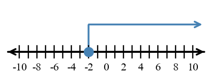
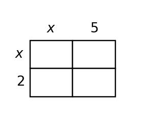
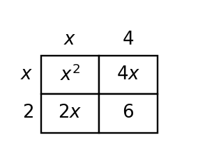

Unit 0A Progress Tracker
Students will analyze, represent, solve, model, interpret, and justify foundational algebra work involving rational number operations, expressions, equations, and inequalities in mathematical and contextual situations.
I need more instruction and practice.
I understand most of it but need more practice.
I can do this independently.
I can teach it.
Progress Tracking
Progress Tracking
Evidence
Progress Tracking
Evidence
Progress Tracking
Evidence
Progress Tracking
Evidence
Learning Ladder
| Rung | I Can Statement | DOK | Level |
|---|---|---|---|
| 8 | I can design a short model that uses rational numbers, expressions, equations, or inequalities to represent and solve a contextual situation. | DOK 4 | Above |
| 7 | I can construct and revise an algebraic representation when a context includes operations, unknowns, or constraints. | DOK 4 | Above |
| 6 | I can critique a solution pathway for an equation or inequality by checking equivalence, operations, and contextual meaning. | DOK 3 | Essential |
| 5 | I can assess whether rewritten expressions, computed values, and solution sets are reasonable for the original problem. | DOK 3 | Essential |
| 4 | I can apply properties and inverse operations to rewrite expressions and solve one-variable equations or inequalities. | DOK 2 | Essential |
| 3 | I can construct number line graphs and algebraic steps that represent rational number operations, equations, and inequalities. | DOK 2 | Essential |
| 2 | I can use order of operations, substitution, and operation rules to calculate expression values and rational number results. | DOK 1 | Essential |
| 1 | I can classify symbols, terms, operations, equation signs, and inequality signs by how they function in algebraic work. | DOK 1 | Essential |
Student Goal Setting
Unit 0A Practice by Depth of Knowledge
Format: 3-5 minute warm-up, vocabulary check, representation recognition, or exit ticket
Purpose: DOK 1 reveals whether students have the prerequisite fluency and notation control needed for rational number operations, substitution, expressions, equations, and inequalities.
Assessment Ideas
- Rational Number Operations Check Can Be Assessed After Section 0A.1 - Compute with integers, fractions, and decimals; apply sign rules across all four operations; use absolute value to find distance between two numbers.
- Evaluate Expressions Check Can Be Assessed After Section 0A.2 - Substitute given values into algebraic expressions; apply order of operations including exponents and absolute value; recognize when an expression is undefined.
- Solve Linear Equations Check Can Be Assessed After Section 0A.4 - Solve one- and two-step equations; verify a proposed solution by substitution; classify equations as one solution, no solution, or all real numbers.
- Inequality Basics Check Can Be Assessed After Section 0A.5 - Solve one-step inequalities including cases requiring sign reversal; identify open or closed boundary point and shade direction; graph a solution set on a number line.
DOK 1 performance shows whether students can control signs across all four operations, substitute into expressions correctly, solve basic equations, and graph inequality solution sets before more complex algebraic reasoning begins.
Classify each item by its algebra role: term, coefficient, operation, equation sign, or inequality sign.
- $-7x$ in $-7x+4$
- $-7$ in $-7x+4$
- $\ge$ in $m\ge 12$
- $=$ in $3p-1=14$
Simplify each rational-number expression.
- $-18+7$
- $\frac{3}{4}-\frac{5}{6}$
- $(-2.5)(-1.2)$
- $-24\div 6$
Evaluate each expression when $a=-2$ and $b=5$.
- $3a^2-2b$
- $|a-b|+4$
- $\frac{b+a}{a}$
Solve each equation. Choose one solution to check by substitution.
- $x+9=-4$
- $5n=35$
- $2p-7=13$
Graph $x\gt -3$ on the number line. Then write whether the boundary point should be open or closed.

Write an inequality represented by the number-line graph.

Simplify by combining like terms.
- $6x-4+3x+9$
- $8y-2x+5y+x$
- $4(a+2)+3a$ after distributing
Complete the table for $h(n)=2n-3$.
| $n$ | $-2$ | $0$ | $4$ |
|---|---|---|---|
| $h(n)$ |
Format: Mini-quiz, graph/table task, matching task, partner check, or short written task
Purpose: DOK 2 reveals whether students can select and carry out procedures across connected algebra foundations rather than completing isolated one-step tasks only.
Assessment Ideas
- Rational Number Contexts Can Be Assessed After Section 0A.1 - Model multi-step change scenarios with rational number expressions; scale quantities using multiplication and division; evaluate a mixed fraction-decimal expression with a sign-reasonableness check.
- Expression Meaning Can Be Assessed After Section 0A.3 - Evaluate and interpret linear model expressions in context; contrast two structurally different expressions to explain the difference in meaning; complete a function table and identify the minimum output.
- Equation Contexts Can Be Assessed After Section 0A.4 - Write and solve an equation from a perimeter context; solve multi-step equations using distribution and check by substitution; create a two-step equation with a specified solution and verify.
- Solve and Graph Inequalities Can Be Assessed After Section 0A.5 - Solve two-step inequalities and graph solution sets; solve inequalities with negative coefficients and explain direction changes; write and solve contextual inequalities; graph compound inequalities with boundary tests.
DOK 2 performance shows whether students can apply rational number operations and algebraic procedures in context, interpret expression structure and meaning, and connect equation and inequality solving to number line representations.
A freezer temperature starts at $-4.5$ degrees. It drops $3.25$ degrees, rises $1.8$ degrees, then drops $0.75$ degree. Write one expression for the final temperature, calculate it, and state whether the final temperature is above or below $-5$ degrees.
A club uses the expression $2.5m+8$ to estimate setup time in minutes for $m$ tables. Evaluate the expression for $m=6$ and interpret the result in the context.
A rectangle has perimeter $54$ centimeters and width $9$ centimeters. Use $2l+2w=P$ to write and solve an equation for the length. Show the inverse-operation steps.
Use the rectangle model to write an equivalent expanded expression for $(x+5)(x+2)$. Fill in the cells mentally or on the model, then write the simplified expression.

Solve $-2m+6\gt 14$. Graph the solution set and explain why the inequality direction does or does not change.
Two expressions are proposed for the words "triple the sum of a number and $4$": $3(n+4)$ and $3n+4$. Evaluate both when $n=5$, then explain which expression matches the words.
Complete the table for $g(x)=x^2-4x+3$. Then identify the smallest output shown.
| $x$ | $0$ | $1$ | $2$ | $3$ | $4$ |
|---|---|---|---|---|---|
| $g(x)$ |
Create a two-step equation that has solution $r=-3$. Then solve your equation and check the solution by substitution.
Format: Constructed response, model critique, strategy comparison, representation analysis, or discourse prompt
Purpose: DOK 3 reveals whether students can reason about why algebraic steps work, when results are reasonable, and how representations preserve meaning.
Assessment Ideas
- Rational Number Reasoning Can Be Assessed After Section 0A.1 - Critique incorrect fraction operation claims and supply the corrected result; compute a total change using both fraction and decimal form and confirm the methods agree; construct a step-by-step strategy for evaluating a complex rational expression.
- Expression Structure Analysis Can Be Assessed After Section 0A.2 - Identify and correct evaluation errors caused by misapplying exponents or sign rules; analyze why operation order within an expression determines its value; match an expression to the context it correctly models.
- Equivalent Expressions Can Be Assessed After Section 0A.3 - Construct a strategy for verifying equivalence across all inputs rather than one test value; analyze what factored and expanded forms each reveal about structure; simplify an expression two ways and explain why the results agree.
- Inequality Reasoning Can Be Assessed After Section 0A.5 - Construct a strategy for solving and graphing a multi-step inequality addressing distribution, negative division, and boundary type; solve an inequality two ways and compare; analyze a student's boundary value claim and revise if needed.
DOK 3 performance shows whether students can critique flawed reasoning, construct solution strategies, verify equivalence beyond a single test case, and reason about why boundary values and operation order determine the meaning of algebraic results.
A student claims $-\frac{2}{3}+\frac{5}{6}=-\frac{7}{9}$ because the numerators and denominators were added separately. Critique the claim, correct the result, and explain the rule that should have been used.
A student evaluates $-3x^2$ at $x=-4$ and gets $48$. Identify the likely misunderstanding, give the correct evaluation pathway, and explain why the sign matters.
Are $4(x-2)+3x$ and $7x-8$ equivalent for all values of $x$? Construct a strategy that proves or disproves equivalence without relying on only one test value.
A student solves $5y-8=27$ by adding $8$ and then multiplying by $5$. Critique the pathway, revise it, and describe how substitution can confirm the final solution.
The area model is intended to represent $(x+2)(x+4)$, but one cell is incorrect. Identify the mismatch, revise the cell, and explain how the model should expand.

Construct a strategy for solving and graphing $-4(x+1)\le 12$. Your strategy must address distribution, division by a negative, and the number-line boundary.
Compare two methods for solving $5-2p\gt 13$: inverse operations and testing values around the boundary. Explain how the two methods should support the same solution set.
A class earns $18$ points, loses $2.5$ points per penalty, and needs at least $8$ points remaining. A student says $p=5$ penalties is reasonable. Use an inequality or expression check to decide whether the claim makes sense in context.
Format: Brief performance task, modeling task, critique-and-revise task, design task, or capstone synthesis task
Purpose: DOK 4 reveals whether students can synthesize foundational algebra skills into compact models that connect operations, expressions, equations, inequalities, and context.
Assessment Ideas
- Rational Number Models Can Be Assessed After Section 0A.1 - Design a multi-entry change log with a required net change using at least one fraction, decimal, and integer; identify and correct a fraction-to-decimal conversion error in a given model; connect absolute value distance and signed addition as two representations of the same quantity.
- Expression Design Can Be Assessed After Section 0A.3 - Create an expression with specified structural features that evaluates to a target output; design a real-world context for a given expression and interpret the result; write a context where two structurally different expressions represent meaningfully different situations.
- Equation Design Can Be Assessed After Section 0A.4 - Create a one-variable equation requiring distribution with a specified solution and verify by substitution; write a real-world context for a given equation and interpret the solution; synthesize a table, equation, and written sentence for a situation.
- Inequality Models Can Be Assessed After Section 0A.5 - Design a real-world context for a given two-step inequality and describe feasible values; compare two student inequality models for the same situation and recommend the stronger model with justification; create a compound inequality with a minimum and maximum constraint and justify the bounds.
DOK 4 tasks reveal whether students can design original models, connect rational number operations, expression structure, equation solving, and inequality reasoning to real contexts. These should remain short performance tasks rather than large projects.
Design a four-entry change log with a required net change of $-3.5$. Your log must include at least one integer, one decimal, and one fraction. Write the expression represented by the log and explain how the entries meet the net-change goal.
Create an expression with one variable that uses parentheses, an exponent, and subtraction. Choose an input value so the expression evaluates to $18$. Show the substitution and explain the role of each operation.
Create a one-variable equation with parentheses whose solution is $x=5$. The equation must require distribution before solving. Then write a short context for the equation and describe what the solution means.
Two students model the same volunteer requirement. Model A is $v\ge 12$. Model B is $2v+3\ge 27$. Solve or interpret both models, then recommend which model is clearer for planning and justify your recommendation.
Design a context that requires a compound inequality with both a minimum and a maximum value. Define the variable, write the compound inequality, and describe how the solution set would appear on a number line.
Synthesize three representations for one situation: a table, an equation, and a written sentence. Use a starting amount of $14$ and a constant increase of $3$ per step. Choose a target total and make the equation solve for the number of steps.
| Steps | $0$ | $1$ | $2$ | |
|---|---|---|---|---|
| Total | $14$ |
A context involves $9$ identical groups of $x+6$ objects. Recommend two equivalent expression forms and explain which form is better for seeing the number of groups and which form is better for calculating quickly when $x$ is known.
Revise this compact algebra model so it is complete: "Start with $20$ points, lose $1.5$ points for each mistake, and the score must stay above $8$." Write an expression, an inequality, and a sentence explaining any limitation of the model.